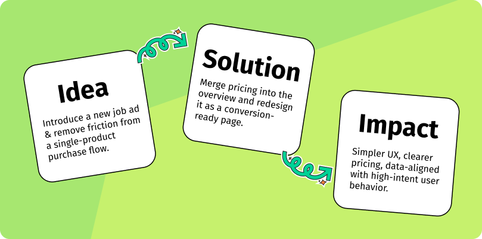
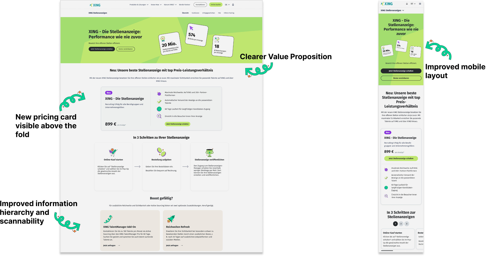

Data-informed UX
Using Adobe Analytics and Tableau to validate design decisions without direct user testing — and knowing which data gaps to call out.
b2b · product design · data-informed ux
How data, IA strategy and UX design came together to simplify a B2B e-commerce flow.
Before: The old purchase flow on recruiting.xing.com included a dedicated pricing page between the product overview and checkout, adding an unnecessary step for already-decided buyers. After: The redesigned flow removes the standalone pricing page. Pricing is integrated into the redesigned overview page, which directs users straight to checkout — fewer steps, less friction.
With the launch of XING's new B2B portfolio, the Performance Job Ad became a single standalone product. But the existing purchase flow on recruiting.xing.com was still built for a multi-product world — including a dedicated pricing page that added unnecessary friction. Bounce rates were high, and users arriving at checkout were already decided buyers who didn't need an extra step.

Step 1 — Data-Informed Decision Making
I used Adobe Analytics and Tableau to analyze traffic sources, bounce rates, and funnel drop-offs. The data showed 96% of overview page traffic came from display ads — users with low awareness who needed convincing, not just a price.
| Stage | What happens | Takeaways |
|---|---|---|
| Overview (132k) | Large audience, exploring, but many bounces (83%) | Users explore the products |
| Pricing page (~7.8k) | Smaller, lower-funnel audience, but lower bounce (32%) | Users might double-check details or confirm the product value |
| Check out start (423) | Very small volume, but high continuation (16%) | Users are already committed — pricing is not a decision point anymore |
~6 %
~1.2 %
Roughly 6% of visitors go from overview to pricing, and ~1.2% of total visitors reach check out. Very narrow funnel. Separate pricing step adds friction rather than value.
This implies that pricing page isn't easy to find or users do not get enough information on overview to continue further down in the funnel.
Step 2 — UX & IA Decision
Based on the data, I recommended removing the standalone pricing page entirely and making the overview page do more work — functioning as both a landing page and a decision page in one step. For a single-product offering, a separate pricing step was adding friction without adding value. The goal was to get high-intent users to checkout faster, without losing the users who still needed convincing.
Step 3 — Overview Page Redesign
I redesigned the overview page with a clearer value proposition for cold traffic, early and transparent pricing visibility, improved information hierarchy and scannability, and a better mobile layout fixing prior usability issues.
The new flow removed the pricing page entirely and redirected users straight from the overview page to checkout. The overview page was redesigned to carry more weight — convincing, informing, and converting in one step.

Because recruiting.xing.com had no existing Figma history and B2B products operate outside the XING B2C design system, I built a clean component library from scratch. Components were aligned with CI and brand identity but given slight B2B-appropriate adjustments.
Reusable components for the pricing card, hero carousel, navigation, headers, and FAQ sections ensure that future product extensions or team members can build consistently — without starting from zero every time.

Since I had to leave the company before the changes were fully rolled out, I was not able to measure the impact of the redesigned purchase flow on real user behavior.
If I had stayed, I would have closely monitored the following metrics to validate the success of the solution and iterate further.
To verify whether removing the pricing step helped users reach the high-intent stage earlier.
To assess whether more users progressed into the funnel compared to the previous structure.
To evaluate whether improved value communication, pricing visibility, and hierarchy reduced early drop-offs.
To ensure that simplifying the entry point did not negatively affect downstream completion rates.
Using Adobe Analytics and Tableau to validate design decisions without direct user testing — and knowing which data gaps to call out.
Simplifying a B2B e-commerce flow by questioning inherited architecture and designing toward conversion rather than convention.
Building a component library from scratch — aligned with brand identity and structured for handover and future team use.